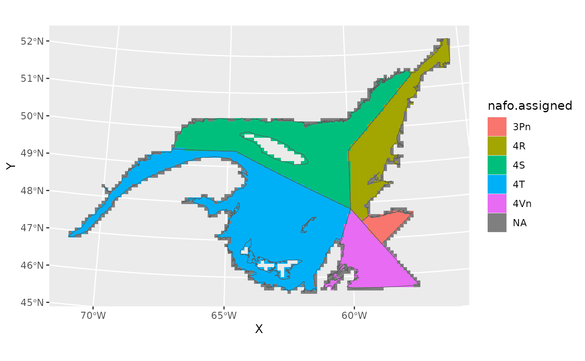
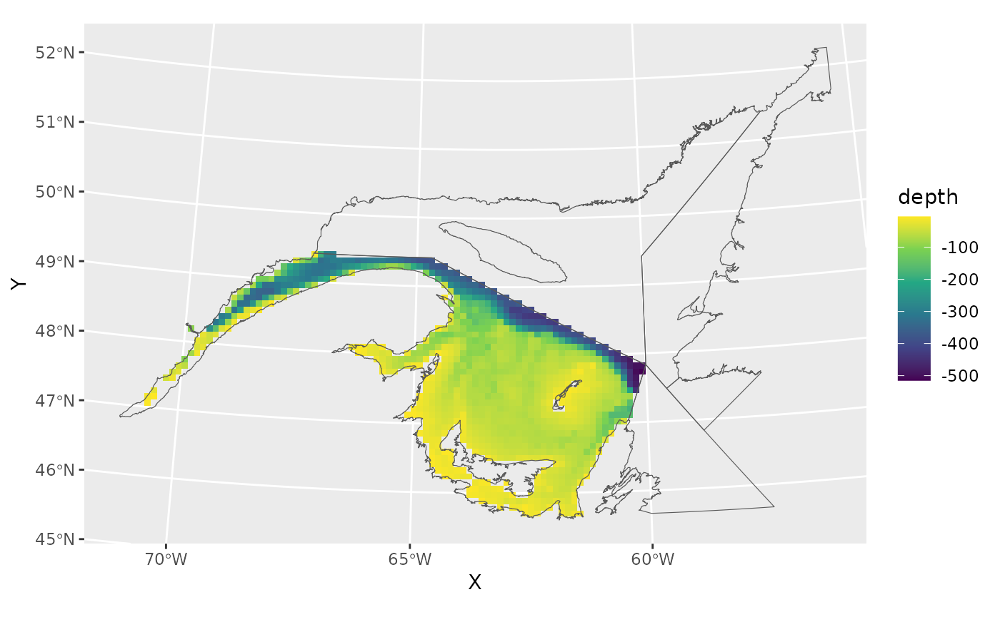

vignette under construction
Objectives
- Make square 10 km X 10 km grid cells over the GSL
- Summarise fishery catch data
- Export the results as either a data frame or a SpatRaster
Make square grids
Use the make_grid function, specifying the grid cell
size (resolution). Using a resolution of 10 makes each grid cell 10 km X
10 km. The finer the resolution, the longer it will take to generate. By
default, this function generates grid cells spanning all of NAFO
3Pn4RST, and assigns the corresponding NAFO division or subdivision to
each cell.
grid<-make_grid(10)
#> Source: https://www.nafo.int
#> Assigning NAFO divisions to 3141 grid cells.
#> Processing points 1 to 1000. 14:22:20
#> Processing points 1001 to 2000. 14:22:30
#> Processing points 2001 to 3000. 14:22:43
#> Processing points 3001 to 3141. 14:22:50The resulting grid is a data frame. The coordinates are the centers of the grid cells. Longitude and latitude coordinates are NAD83, EPSG:4269, in decimal degrees. X and Y coordinates are NAD83, UTM zone 20N, with units in km.
class(grid)
#> [1] "data.frame"
head(grid)
#> X Y area longitude latitude nafo.assigned
#> 112 988.9978 5810.911 1 -55.83546 52.23061 <NA>
#> 113 998.9978 5810.911 41 -55.69022 52.22166 <NA>
#> 114 1008.9978 5810.911 92 -55.54506 52.21253 4R
#> 115 1018.9978 5810.911 32 -55.39998 52.20322 <NA>
#> 228 998.9978 5800.911 48 -55.70491 52.13248 4R
#> 229 1008.9978 5800.911 100 -55.56003 52.12338 4RPlot the grid, showing the NAFO boundaries.
Notice that grid cells without assigned NAFO divisions have centers that fall outside the NAFO borders.
# get NAFO boundaries
naf<-get_shapefile('nafo.clipped')
#> Source: https://www.nafo.int
naf<-terra::project(naf, '+proj=utm +zone=20 +datum=NAD83 +units=km +no_defs')
ggplot()+
geom_tile(data=grid,aes(X,Y,fill=nafo.assigned))+
geom_spatvector(data=naf,fill=NA)
Restrict by location and depth
- Restrict to NAFO 4T
- Use function
get_depthto estimate depth in meters. Use ?gslSpatial::get_depth for details. - Remove grid cells with depths shallower than 5 meters.
grid<-grid[which(grid$nafo.assigned=="4T"),]
depth<-get_depth(grid$longitude,grid$latitude,"epsg:4269")
#> The default argument assumes your points have crs NAD83 - EPSG:4269.
#> Assigning depths based on GEBCO_2024, www.gebco.net.
grid$depth<-unlist(depth)
str(grid)
#> 'data.frame': 1169 obs. of 7 variables:
#> $ X : num 189 199 209 219 159 ...
#> $ Y : num 5481 5481 5481 5481 5471 ...
#> $ area : num 63 100 100 100 61 69 68 100 100 100 ...
#> $ longitude : num -67.3 -67.1 -67 -66.9 -67.7 ...
#> $ latitude : num 49.4 49.4 49.4 49.4 49.3 ...
#> $ nafo.assigned: chr "4T" "4T" "4T" "4T" ...
#> $ depth : num -11 -185 -289.9 -296 -35.9 ...
grid<-grid[-which(grid$depth>(-5)),]
ggplot()+
geom_tile(data=grid,aes(X,Y,fill=depth))+
geom_spatvector(data=naf,fill=NA)+
scale_fill_viridis_c()